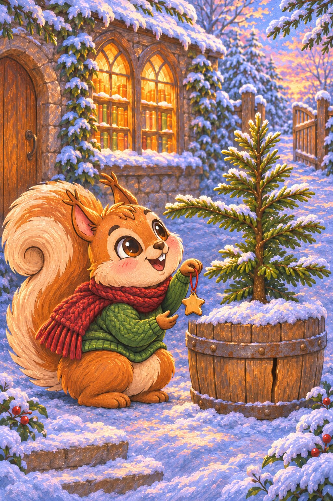
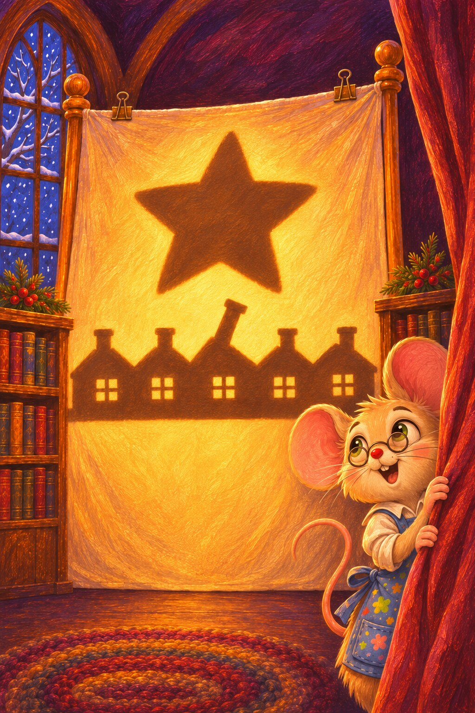
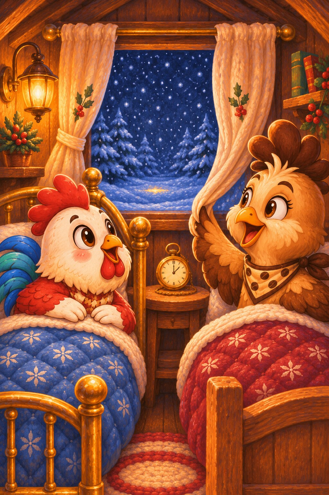
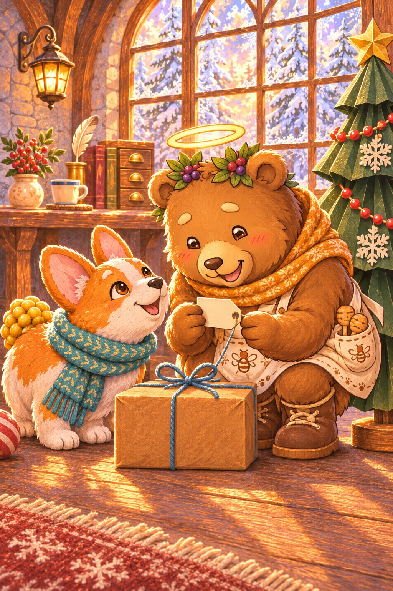
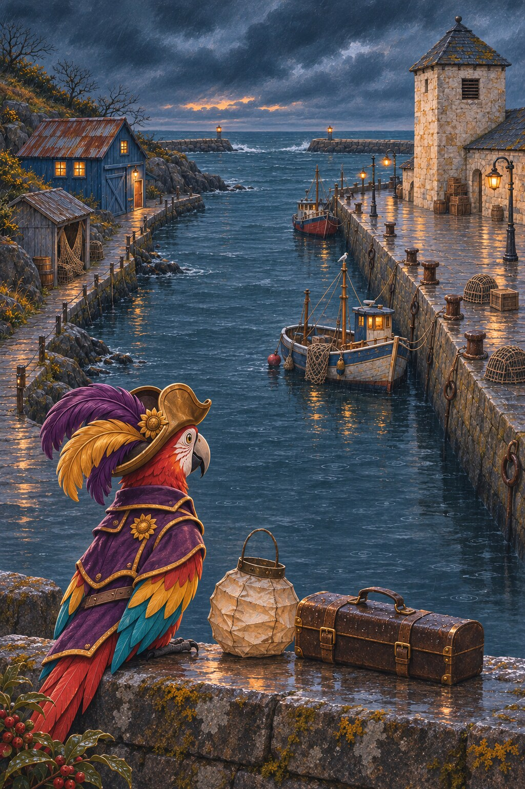

Reads › Holidays and events › Christmas
Free Christmas picture booksChristmas stories
Six original picture books follow the woodland friends up to Christmas morning. Read them in the order they happen, or pick by age. Five stories are for ages 4 to 9, and the harbour mystery is for confident readers aged 12 to 14. Find a summer Christmas by the sea in its own section.





Christmas reading guide
Pick a story for home or class. Use the age bands and time estimates as a starting point.
- One More Story Before Santa
Ages 5–7 · 8–12 minutes · Read together. A quiet Christmas Eve story about two chicks trying to stay awake. - The Last Parcel Under the Tree
Ages 7–9 · 12–18 minutes · Read together or independently. A Christmas morning mystery with a parcel and a clue about who gets there last. - Captain Beakon and the Bell Across the Bay
Ages 12–14 · 25–35 minutes, or one chapter at a time · Independent reading. An older-reader mystery about a bell ringing from the wrong shore.
Times are approximate and leave room to pause over the pictures or discuss clues.
Browse Summer Christmas stories →
Talk about the story
- What did a character notice that changed what they did next?
- Which detail in a picture helped you understand something the words left out?
Draw the next moment
Choose a character. Draw what they might do after the story ends. Add one sentence about your picture, or tell it to someone.
Read them in order
Each story happens a little later in the season than the one before. Every book stands on its own, so start anywhere.
- 1 · Early December
Nutmeg and the Tree That Wouldn’t Come
Nutmeg has picked the perfect little fir for the Christmas party. She has a cart, a wooden star and Corgi to help her. Then the fir holds on tight. With everyone expecting a tree in the square, Nutmeg has to look a little closer at the place where it grows.
- 2 · The week before
Vincent Van Mouse and the Christmas Shadow Show
Vincent has painted the whole village for the library’s Christmas window. Then a gust tears a hole right through his favourite picture. With the audience already on its way, a lamp and a scrap of card give him an idea for a show nobody has seen before.
 3 · The first snow
3 · The first snowSub-Zero and the Great Snowball Truce
Sub-Zero wants to slide. Biscuit-Bouncer wants to throw. When Hop-Tart’s snowball rules fill the field with flags, the friends invent a game where both teams can win.

4 · Christmas week · older readersCaptain Beakon and the Bell Across the Bay
Every December, the harbour bell opens the lantern procession with the same three strokes. This year the third stroke never comes. When Polly Roger hears the tune from the wrong shore the following evening, she thinks somebody has moved the bell. Her best clue points to a friend.
- 5 · Christmas Eve
One More Story Before Santa
Cluck O’Clock and Coop-Accino plan to stay awake on Christmas Eve. He’ll listen for Santa. She’ll keep watch at the window. But first, Hen-Berry has a little story about a house with no chimney.
- 6 · Christmas morning
The Last Parcel Under the Tree
Ted-E-Bear and Corgi-on-the-Cob find one parcel after everyone has opened their Christmas presents. Its tag says it’s for whoever gets there last. But where is “there”? And how can anybody be last if the door keeps opening?
Also good this season
- Sub-Zero and the Snowflake Post · Ages 4–5 · 6 pages
- Sub-Zero’s Magic-E Lantern · Ages 6–7 · 5 pages
- Nutmeg’s Four Seasons · Ages 5–8 · 4 pages
- Winter in the Woods: two short winter stories and two winter games
Every book is free to read online, read aloud with your device’s voice, save for offline or print as a PDF. They stay on the shelf all year.
Summer Christmas
Christmas by the sea, with long summer days and friends around the table.
 Christmas lunch
Christmas lunchBark-B-Q and the Long Christmas Table
Bark-B-Q has a seaside Christmas lunch planned down to the minute. By the time everyone arrives, the shade has slipped away and the benches don’t work for everyone. A folding table might save lunch, if the host can give his friends enough room to help.